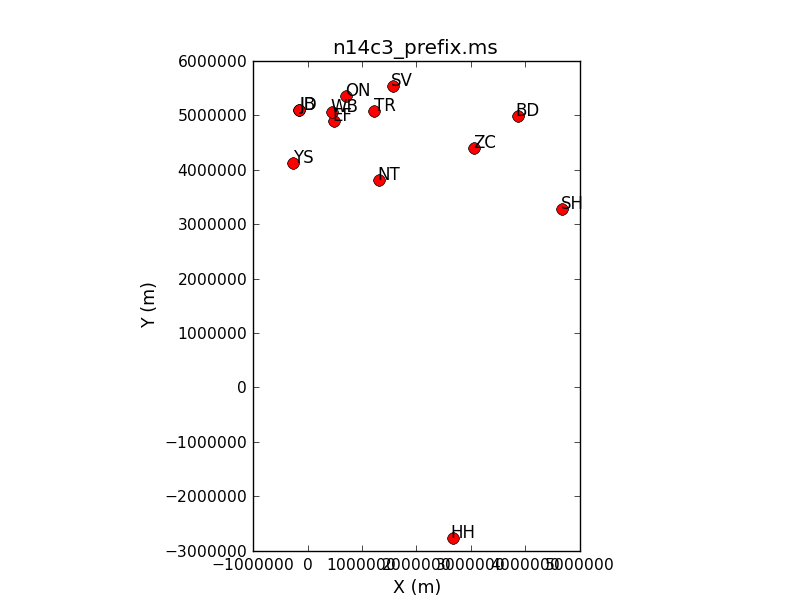
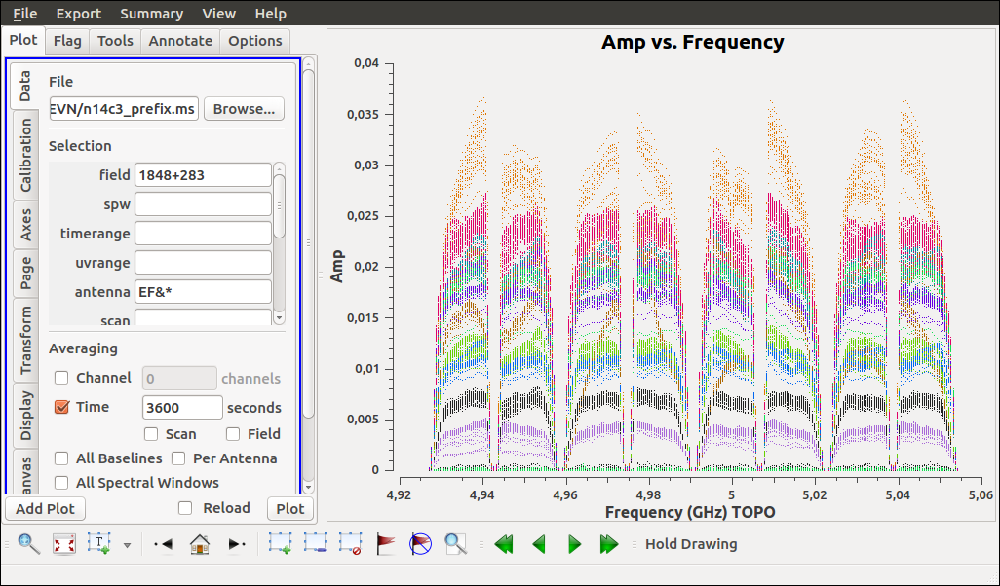
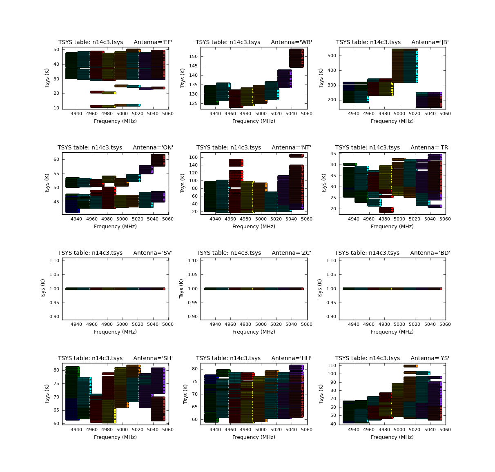
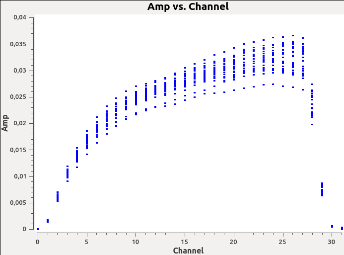
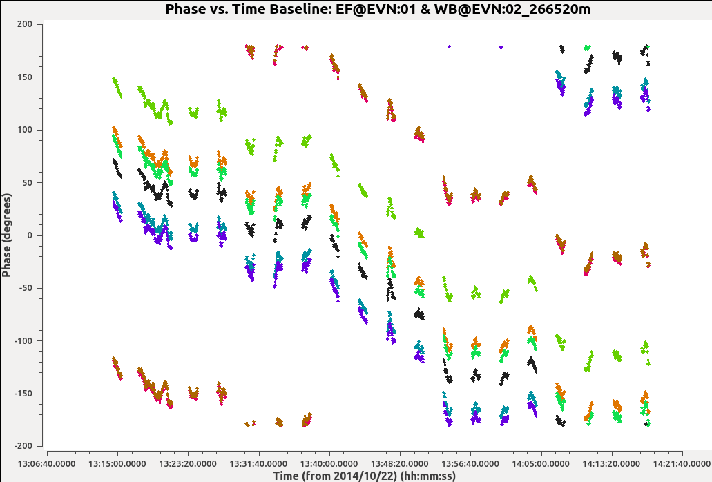

EVN continuum tutorial¶
Setup the workspace¶
First create a directory and copy the above-mentioned files to this new directory.
$ mkdir EVN
$ cp <some location>/* .
$ ls
n14c3_1_1.IDI1 n14c3_1_1.IDI2 n14c3.checksum NME_DARA.tgz
$ tar xvf NME_DARA.tgz
$ ls
calibration.py key.py NME_3C345_skeleton.py
CASA_1848+283_J1849+3024.pdf n14c3_1_1.IDI1 NME_all.py
CASA_Basic_EVN.pdf n14c3_1_1.IDI2 NME_DARA.tgz
CASA_J1640+3946_3C345.pdf n14c3.antab NME_J1849.py
flagSH.flagcmd n14c3.gc README
flag_Tar1Ph1.flagcmd NME_3C345.py.gz tsys_spectrum.py
n14c3_1_1.IDI1 and n14c3_1_1.IDI2 are FITS IDI files from the correlator that contain the raw data.
Data loading and inspection¶
Start CASA using the following command
$ casa
If you are using CASA version greater than 5.0, make sure to execute the following command in CASA.
sys.path.append('./')
Getting help in CASA: There are different ways in which you can find documentation about CASA tasks.
- Online documentation
- The doc() command - Opens help in a web browser
- The help() command - Displays help inside the CASA session.
Data conversion: CASA uses a file format called Measurement Sets (MS). Convert the IDI files to MS using the task importfitsidi
default(importfitsidi)
inp()
fitsidifile = ['n14c3_1_1.IDI1', 'n14c3_1_1.IDI2'] # Specify your input files
vis='n14c3_prefix.ms' # Output MS name
constobsid=True
scanreindexgap_s=15 # Separate scans if gap > 15s
inp() # Check your input
importfitsidi() # Execute the task
In the logger, you might see warnings about antenna diameter and/or negative/zero scan numbers. You can ignore those warnings.
default(importfitsidi)
inp() # What do you see now? Have the parameters changed?
tget(importfitsidi) # You can also do "run importfitsidi.last" or execfile('importfitsidi.last')
inp() # You'll see that the parameters have now been restored
CASA uses the importfitsidi.last to store the parameters of a successfully executed task.
What is in your MS? You can inspect the content of an MS using the task listobs
default(listobs)
inp()
vis='n14c3_prefix.ms'
listobs()
You can find the output of listobs in the logger. You can set listfile=’n14c3_prefix.ms.listobs’ to redirect the output of listobs to the file n14c3_prefix.ms.listobs.
Visualizing your data: CASA provides a number of tools to visualize the data present in your MS. For example, you can use the plotants task to plot the locations of the antennas.
default(plotants)
vis='n14c3_prefix.ms'
plotants()
You will see a plot similar to the one shown below which tells you the relative distances between the stations.
{kind=link}
Another very useful CASA tool for visualizing the visibility data is the plotms task. There are different ways in which you can start up the plotms window. One way to do this is
default(plotms)
vis='n14c3_prefix.ms'
xaxis='frequency'
yaxis='amp'
field='1848+283' # specify a bright source
avgtime='3600'
antenna='EF&*' # Plot all baselines containing the antenna EF
correlation='RR,LL' # Plot only the parallel hands
coloraxis='antenna2'
plotms()
You will see a new window like the one shown in the image below.
{kind=link}
plotms contains a number of knobs that can be tweaked to visualize the visibility data. Try tuning a few knobs and see what you find.
Correction for Earth rotation¶
Adjust the uvw coordinates to allow for the projection effects as the Earth rotates
default('fixvis')
vis='n14c3_prefix.ms' # Input MS
outputvis='n14c3.ms' # Output MS with correct uvw coordinates
fixvis()
Insert the antenna diameters¶
From the output of listobs above, we see that the individual station/antennas have 0. diameter. We can insert the diameter and some missing information about feed offsets
ants = ['EF','WB','JB','ON','NT','TR','SV','ZC','BD','SH','HH','YS','JD']
diams = [100.0,300.0,75.0,25.0,32.0,32.0,32.0,32.0,32.0,25.0,24.0,40.0,25.0]
axoffs=[[0.013,4.95,0.,2.15,1.831,0.,-0.007,-0.008,-0.004,-0.002,6.692,2.005,0.],[0.,0.,0.,0.,0.,0.,0.,0.,0.,0.,0.,0.,0.],[0.,0.,0.,0.,0.,0.,0.,0.,0.,0.,0.,0.,0.]]
# We want to modify the antenna table
tb.open('n14c3.ms/ANTENNA', nomodify=False)
tb.putcol('DISH_DIAMETER', diams)
tb.putcol('OFFSET', axoffs)
tb.close()
# Verify the modifications
default(listobs)
vis='n14c3.ms'
listobs()
Insert Tsys table¶
The file n14c3.antab contains Tsys information. However, this file is not compatible with the CASA format. So, we will use the tsys_spectrum.py script to convert the n14c3.antab into a CASA table.
inbase='n14c3'
execfile('tsys_spectrum.py') # execfile is used to run python scripts inside CASA
The script tsys_spectrum.py writes the content of the antab file into a measurement set named n14c3.ms. We can create the Tsys information written to this MS into a calibration table using the gencal task.
default(gencal)
vis='n14c3.ms'
caltable='n14c3.tsys'
caltype='tsys'
gencal()
You can plot the values stored in the new table n14c3.tsys using the plotcal task.
default(plotcal)
caltable='n14c3.tsys'
xaxis='freq'
yaxis='tsys'
subplot=431
iteration='antenna'
plotcal()
You should see an image similar to the one shown below.
{kind=link}
Notice that three antennas (SV, ZC, and BD) do not have Tsys values. For these three stations, we will only correct for the effect of elevation based on the gains provided in the file n14c3.gc.
Flag autocorrelations¶
It is common practice to flag the autocorrelations present in the visibility data. You can do this using the task flagdata.
default(flagdata)
vis='n14c3.ms'
mode='manual'
autocorr=T
flagdata()
CASA will warn about a missing PROCESSOR sub-table. You can safely ignore the warning.
Backup the flag table¶
ToDo: Explain what happens when you flag a visibility. See if you can find the flag table in casabrowser.
Before we do anything else, now is a good time to make a back up of the flag table. You can do this using the task flagmanager.
default(flagmanager)
vis='n14c3.ms'
mode='save'
versionname='preSVandEndChans' # Use this name to restore your flag table
flagmanager()
Preflagging¶
In this step, we will remove visibilities that we know are bad.
Flag antenna SV: From the output of plotms above, we see that antenna SV is bad. So, let’s flag that antenna using the task flagdata.
default(flagdata)
vis='n14c3.ms'
mode='manual'
antenna='SV'
flagdata()
Flag bad channels: You can use plotms to identify bad channels in your data. EF&JB form the most sensitive baseline in this dataset (do you know why?). Plot the visibility amplitude as a function of nnel in plotms.
default(plotms)
vis='n14c3.ms'
xaxis='channel'
yaxis='amp'
field='1848+283'
avgtime='3600'
antenna='EF&JB'
correlation='RR&LL'
spw='0'
plotms()
In the plotms window (and in the image below), you will see that channels 0-5 and channels 29-31 are below half the maximum sensitivity.
{kind=link}
Now that we have identified bad channels for spw 0, can you identify bad channels in the remaining spws? Once you have identified them, you can flag these channels using flagdata.
default(flagdata)
vis='n14c3.ms'
mode='manual'
spw = '0:0~5;29~31,2:0~5;29~31,4:0~5;29~31,6:0~5;29~31,1:0~2;27~31,3:0~2;27~31,5:0~2;27~31,7:0~2;27~31'
flagdata()
Check for bad scans: Similar to what we did above, we can now plot the visibility as a function of time to identify time slots containing bad visibility data.
default(plotms)
vis='n14c3.ms'
xaxis='time'
yaxis='amp'
field='1848+283'
spw='0~7:13~20' # Average a few central channels where the response is stable
avgchannel='8'
antenna='EF&*'
correlation='RR,LL'
coloraxis='baseline'
plotms()
The first one or two integrations of each scan are bad. We can flag this using a specific flagdata mode called ‘quack’.
default(flagdata)
vis='n14c3.ms'
mode='quack'
quackinterval=5
We also know that antenna HH is bad for scans 62-65. (Can you figure from plotms why antenna HH is bad for these scans?)
default(flagdata)
vis='n14c3.ms'
antenna='HH'
mode='manual'
scan='62~65'
flagdata()
In addition to manual flagging, you can also specify flags as a list. For example, the file flagSH.flagcmd contains a range of visibilities that have been identified to be bad. Have a look at the file flagSH.flagcmd. Once again, you can use the flagdata task to flag using a flag list.
default(flagdata)
vis='n14c3.ms'
mode='list' # Notice the mode
inpfile='flagSH.flagcmd'
flagdata()
Plot the visibility data to ensure that all bad data have been flagged. Now that we have flagged bad data, we can start calibrating our data.
Delay calibration¶
During observation, data recorded at each antenna is timestamped so that data from different stations can be synchronized before correlation. However, small clock errors can still be present and they can cause a frequency-dependent phase shift (i.e.) when you plot the visibility phase as a function of frequency, you will see that the phases have a non-zero slope.
default(plotms)
vis='n14c3.ms'
xaxis='freq'
yaxis='phase'
field='1848+283'
avgtime='3600s'
antenna='EF&*'
coloraxis='corr'
iteraxis='baseline'
correlation='RR,LL'
plotms()
{kind=link}
From the image above, we certainly see that there is a systematic slope with some random wiggle. To correct for these small clock errors, we need to determine the gradient of phase against frequency (\(d\phi/d\nu\)) and correct our complex visibility data.
If we assume that these clock errors are constant with time, we can use a single scan to derive the corrections. In this case, we will use scan 38 as it contains unflagged data for all spw and antennas. We can derive these corrections using the CASA task gaincal.
default(gaincal)
vis='n14c3.ms'
caltable='n14c3_bpcal.k' # Name of the output calibration table
field='1848+283'
scan='38'
solint='150s' # This ensures that only one solution is derived.
refant='EF'
gaintype='K' # This means solve for delay
parang=T # This takes care of feed rotation in Alt-Az mounts
You must always look at the derived solutions before doing anything with it. You can plot calibration solutions using the task plotcal.
default(plotcal)
caltable='n14c3_bpcal.k'
xaxis='freq'
yaxis='delay'
iteration='antenna'
subplot=431
plotcal()
{kind=link}
Note that for station ‘EF’, we see that the delay corrections are exactly 0 ns. Can you figure out why this is?
Time-dependent phase correction¶
For an unresolved calibrator at the phase center, the visibility phase vs. time plot should be flat.
default(plotms)
vis='n14c3.ms'
xaxis='time'
yaxis='phase'
field='1848+283'
spw='0~7:13~20'
avgchannel='8'
antenna='EF&*'
coloraxis='spw'
iteraxis='baseline'
correlation='RR'
plotms()
However, the visibility phases in the image shown below are clearly not flat.
{kind=link}
We will once again use the task gaincal to derive a correction for this. However, instead of setting gaintype=’K’ in the previous step, we will use gaintype=’G’ and calmode=’p’. These two parameters tell gaincal to derive time-dependent phase correction.
default(gaincal)
vis='n14c3.ms'
caltable='n14c3_bpcal.p0'
field='1848+283'
solint='30s'
refant='EF'
gaintype='G'
calmode='p'
gaintable=['n14c3_bpcal.k']
interp='nearest'
parang=T
gaincal()
In the gaincal task above, note that we set gaintable=[‘n14c3_bpcal.k’]. This tells gaincal to apply the delay correction derived above before deriving the new phase solutions. Plot the derived phase solutions.
default(plotcal)
caltable='n14c3_bpcal.p0'
xaxis='time'
yaxis='phase'
iteration='antenna'
subplot=431
plotcal()
{kind=link}
Bandpass calibration¶
Need to motivate why we do bandpass calibration
To determine the bandpass corrections, we use the task bandpass.
default(bandpass)
vis='n14c3.ms'
caltable='n14c3.B'
field='1848+283'
solint='inf'
combine='scan'
refant='EF'
solnorm=T
gaintable=['n14c3_bpcal.k','n14c3_bpcal.p0','n14c3.tsys','n14c3.gc']
interp='nearest'
parang=T
bandpass()
By setting solint=’inf’ and combine=’scan’, we are instructing bandpass to combine all scans and derive time-independent amplitude and phase corrections for each channel. Visualize the solutions using plotcal.
default(plotcal)
caltable='n14c3.B'
xaxis='freq'
yaxis='amp' # You can also set this to 'phase'
iteration='antenna'
subplot=431
plotcal()
Apply calibration solutions to the target¶
Now that we have determined the calibration solutions to account for various instrumental effects (using a calibrator source), we can now apply these corrections to the target data. We can do this using the task applycal.
default(applycal)
vis='n14c3.ms'
field='' # Apply the solutions to all source
gaintable=['n14c3.tsys','n14c3.gc','n14c3_bpcal.k','n14c3.B']
interp='nearest'
parang=T
applymode='calonly'
applycal()
Notice that we are not applying the time-dependent phase corrections (n14c3_bpcal.p0) to the target. Can you guess why this is?
If you look at the logger carefully, you will see that applycal reports that it is “Adding CORRECTED_DATA column(s)”. This means that the applycal task has created a copy of our DATA into a new column called CORRECTED_DATA inside our measurement set and has applied the calibration solutions to this new column. This duplication of data ensures that the original data is left untouched.
Now, using the CORRECTED_DATA column, make the following plots for the source 1848+283:
- Amplitude vs. Frequency
- Phase vs. Frequency
- Phase vs. Time
What do you see in these plots? How do they compare to the previous plots we saw above?
Split out the target along with its phase-reference¶
For convenience, let us now create two new measurement sets for each of our target along with its phase-reference source. We need to make sure that the new MS are created using the calibrated visibilities present in the CORRECTED_DATA column.
First, split out the source J1640+3946 along with its phase-reference calibrator 3C345
default(split)
vis='n14c3.ms'
outputvis='J1640+3946_3C345.ms'
field='J1640+3946,3C345'
datacolumn='corrected'
split()
Next, split out the target J1849+3024 along with its phase-reference calibrator 1848+283.
outputvis='1848+283_J1849+3024.ms'
field='1848+283,J1849+3024'
datacolumn='corrected'
split()
This concludes the first part of the EVN Basic Continuum tutorial.